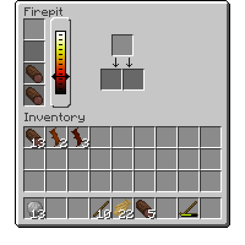
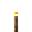

Index / Починаємо / Вогонь та багаття
Вогонь та багаття
Вогонь є важливим технологічним процесом. Щоб створити вогонь, тобі знадобиться примітивне кресало(). Щоб ним скористатись, просто клацни ним Right Click по землі. Через кілька секунд з’явиться дим, а потім спалахне вогонь. Може знадобитися кілька успішних спроб запалювання.

Зробити таку запальничку можна за допомогою двох палиць.
Багаття
Такою запальничкою можна створити багаття. Щоб зробити його, вам знадобиться одна колода, три палички та, за бажанням, розпал. Цим розпалом можуть бути такі предмети, як вироби з паперу, солома або соснові шишки. Він збільшить шанс успішного створення вогнища. Кинь (Q) ці предмети на землю в один блок. Потім використовуй запальничку на тому блоці.
Multiblock
Якщо тобі вдалося, буде створено багаття.
Відкрий інтерфейс багаття. Ліворуч є чотири слоти для палива. Колоди, торф та палички можна використовувати як паливо для нього, помістивши їх у найвищий слот. Паливо буде споживатися з самого нижнього слота. Є індикатор, що показує температуру багаття. Праворуч є слот для предметів, що потрібно розігріти.
Інтерфейс багаття

2
Нагрівається****
Багато корисного можна виготовити у багатті. З однієї палички можна отримати два смолоскипи. Зауважте, що смолоскипи згодом згорять, їх потрібно запалити знов за допомогою a кресала, або іншого смолоскипа.
Гаряче****
У багатті також можна приготувати їжу. Сире м’ясо, рибу, тісто можна готувати у багатті, що подовжить термін їх зберігання. (Докладніше про це - тут)
Багаття можна загасити у будь-який момент лопатою.
До вогнища також можна додати пристрої для розширення його функціональності. Використовуючи гриль з кованого заліза, твоє багаття перетвориться, відповідно, на гриль. А як додати керамічний казан - на казан для приготування їжі. Щоб видалити будь-який пристрій, Right Click утримуючи Shift. Будь обережним, не намагайся зняти гарячий гриль або казан!
Multiblock
Багаття з грилем або казаном.
Паливо має різний рівень чистоти. Додавання нечистого палива до багаття робить його більш димним. Якщо вогонь горить дуже погано, дим почне здійматись дуже високо в повітря. Найчистішим паливом є колоди. Хвойні - не зовсім чисті. Соснові шишки та опале листя не дють високої температури, щоб готувати багато їжі, та є дуже брудними.